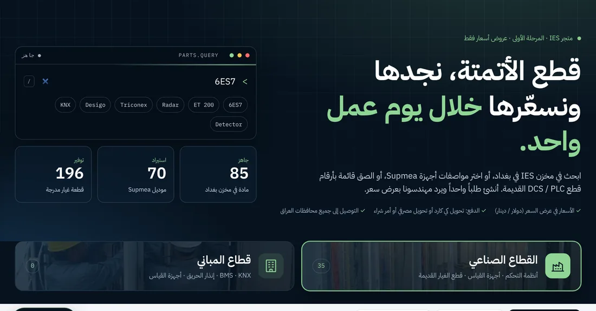
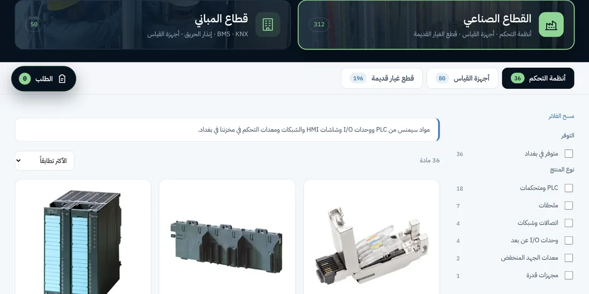
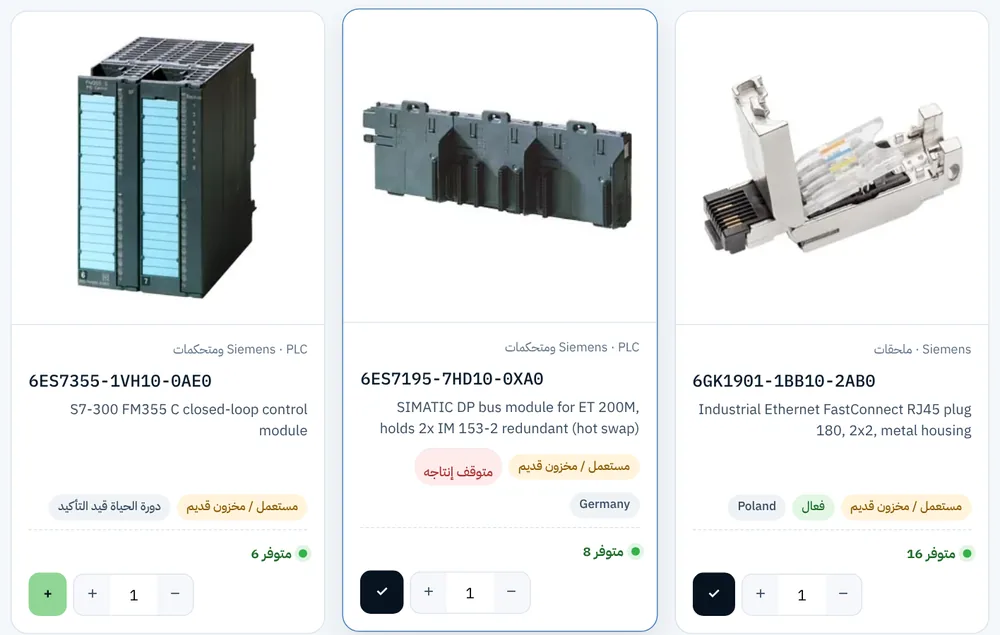
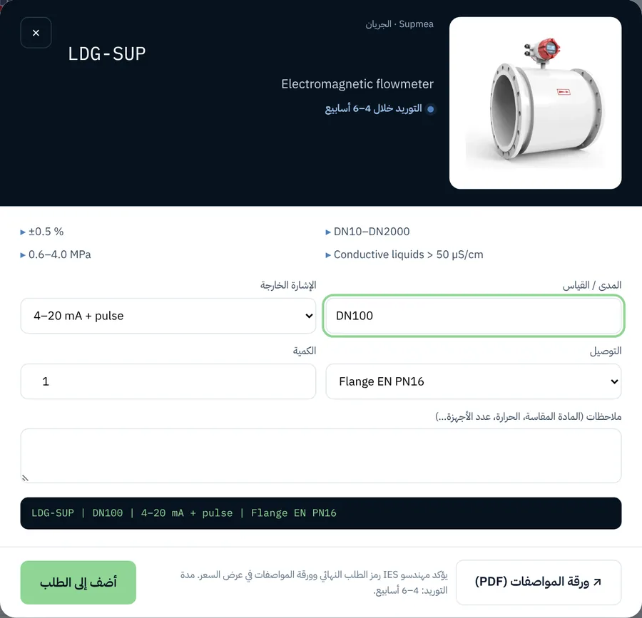
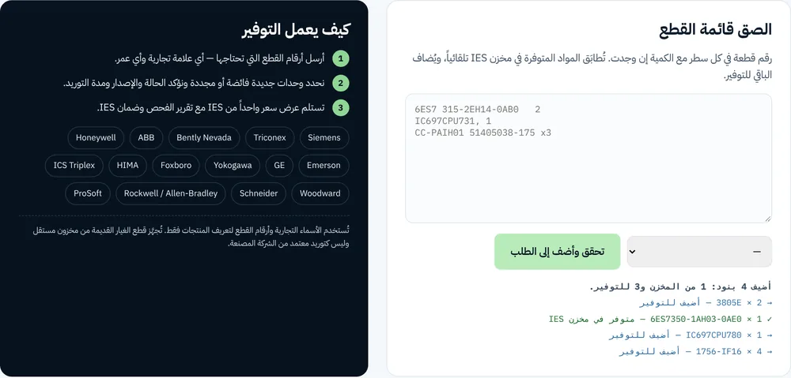
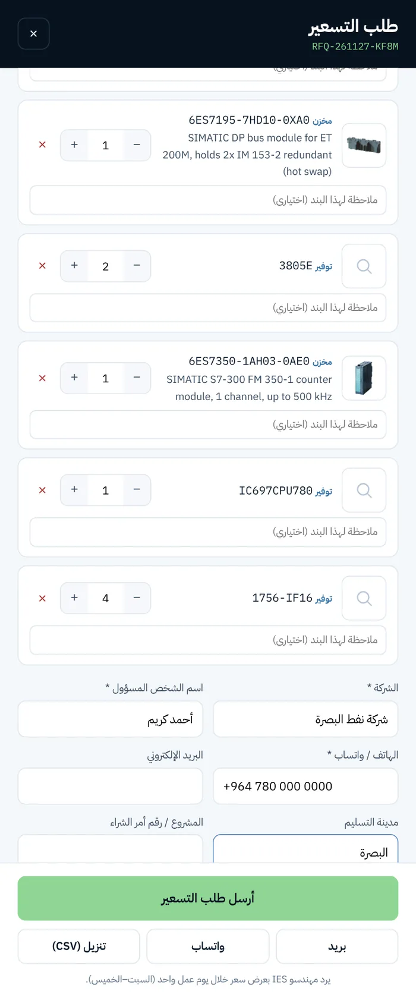

طريقة استخدام متجر IES
ابحث عن قطع الأتمتة وأجهزة القياس، وأنشئ طلباً واحداً، واستلم عرض سعر من IES خلال يوم عمل واحد. لا تحتاج إلى حساب ولا إلى دفع إلكتروني.
01ما هو المتجر
متجر IES هو متجر عروض أسعار (المرحلة الأولى). تختار المواد وترسل طلب تسعير (RFQ)، فيتحقق مهندسو IES من التوفر والحالة ومدة التوريد ويرسلون لك عرض سعر مكتوباً بالدولار أو الدينار العراقي.
- الدفع بعد قبول عرض السعر: تحويل كي كارد أو تحويل مصرفي أو أمر شراء (PO).
- التوصيل إلى جميع محافظات العراق من مخزننا في بغداد، أو بالاستيراد حسب الطلب.
- مدة الرد: يوم عمل واحد (السبت–الخميس، 08:00–16:00 بتوقيت بغداد).
02البحث عن قطعة
- اكتب رقم القطعة أو الموديل أو الوصف في مربع البحث أعلى الصفحة (مثلاً
6ES7أوRadarأوTriconex). المسافات والشرطات لا تؤثر. - أو اضغط على أحد الاختيارات السريعة تحت مربع البحث.
- اختر القطاع: القطاع الصناعي (أنظمة التحكم، أجهزة القياس، قطع الغيار القديمة) أو قطاع المباني (BMS وKNX وإنذار الحريق وأجهزة القياس).
- اختر التبويب المطلوب. الرقم على كل تبويب يبيّن عدد المواد فيه.
لم تجد ما تبحث عنه؟ اضغط اطلب «…» تحت النتيجة الفارغة، فيُضاف نص البحث إلى الطلب ونوفّره لك.

03الفلاتر والترتيب وطريقة العرض
- التوفر – متوفر في بغداد، أو التوريد خلال 4–6 أسابيع (Supmea)، أو يُوفَّر حسب الطلب (قطع الغيار القديمة).
- نوع المنتج والعلامة التجارية والحالة تضيّق القائمة، والرقم الصغير يبيّن عدد المواد المطابقة.
- مسح الفلاتر يلغي كل الفلاتر. على الهاتف افتح الفلاتر من زر الفلاتر.
- رتّب حسب الأكثر تطابقاً أو رقم القطعة أو الأكثر توفراً، وبدّل بين العرض الشبكي وعرض القائمة.

04معنى علامات التوفر
| العلامة | المعنى |
|---|---|
| ● متوفر 8 | موجود الآن في مخزننا في بغداد، والرقم هو الكمية المتوفرة. |
| التوريد خلال 4–6 أسابيع | جهاز Supmea يُستورد حسب الطلب لمشروعك. |
| حسب الطلب · 1–3 أسابيع | قطعة غيار قديمة لأنظمة DCS / PLC / SIS من مخزون مستقل. تُذكر الحالة وتقرير الفحص وضمان IES في عرض السعر. |
| مستعمل / مخزون قديم، متوقف إنتاجه، قيد الإيقاف | حالة المادة، وحالة المنتج لدى الشركة المصنعة. |
الصور لتعريف المنتج، وقد تختلف المادة المجهزة في الإصدار أو الشكل. علامة «صورة تمثيلية» تعني أن الصورة لنفس عائلة المنتج.
05إضافة المواد إلى الطلب
- حدد الكمية بزرّي − و+ على البطاقة.
- اضغط الزر الأخضر +، فيتحول إلى ✓ ويزداد عدّاد الطلب على جانب الشاشة.
- اضغط على رقم القطعة أو الصورة لرؤية التفاصيل: الشركة المصنعة وبلد المنشأ ورمز HS ودورة الحياة والبديل.

06اختيار مواصفات جهاز Supmea
- افتح أجهزة القياس واضغط اختر المواصفات وأضف على أحد موديلات Supmea.
- اختر ما تعرفه: القطر أو المدى، والإشارة الخارجة، والتوصيل، والكمية. وأضف ملاحظات مثل المادة المقاسة أو الحرارة أو عدد الأجهزة.
- اضغط أضف إلى الطلب. يؤكد مهندسو IES رمز الطلب النهائي ويرسلون ورقة المواصفات مع عرض السعر.
رابط ورقة المواصفات (PDF) يفتح ورقة المواصفات من الشركة المصنعة.

07لصق قائمة القطع (قطع الغيار القديمة)
- افتح القطاع الصناعي › قطع غيار قديمة.
- الصق قائمتك في المربع: رقم قطعة واحد في كل سطر، وبعده الكمية إن كنت تعرفها (مثلاً
3805E 2). - اختر العلامة التجارية إذا كانت كل القطع من علامة واحدة (اختياري)، ثم اضغط تحقق وأضف إلى الطلب.
يُفحص كل سطر: المواد الموجودة في مخزن IES تُطابق، والقطع المدرجة تُضاف، والباقي يُضاف للتوفير. كل الأسطر تدخل في طلب واحد.

08إرسال طلب التسعير
- اضغط اطلب عرض سعر (أو زر RFQ على جانب الشاشة)، فيفتح طلبك بكل البنود.
- راجع الكميات، واحذف ما لا تحتاجه، وأضف ملاحظة لأي بند.
- املأ الشركة واسم الشخص والهاتف / واتساب (إلزامية)، وإن أمكن: البريد الإلكتروني ومدينة التسليم ورقم المشروع أو أمر الشراء والتاريخ المطلوب ورسالة.
- اضغط أرسل طلب التسعير. يظهر لك رقم الطلب (مثلاً RFQ-261127-AB12). وإذا كتبت بريدك الإلكتروني تصلك رسالة تأكيد.
يمكنك أيضاً إرسال الطلب نفسه عبر البريد الإلكتروني أو واتساب، أو تنزيله كملف CSV لسجلاتك.

09بعد الإرسال
- يراجع مهندس من IES الطلب ويرد عليك بالبريد أو واتساب خلال يوم عمل واحد، وعادةً مع عرض السعر.
- اذكر رقم الطلب عند الاتصال بنا أو مراسلتنا.
- يبقى طلبك محفوظاً في المتصفح حتى ترسله أو تفرغه، فتستطيع إضافة المواد على عدة زيارات.
10بياناتك وأسماء المنتجات
- نستخدم بيانات الاتصال فقط للرد على طلبك وإعداد عرض السعر، ولا نبيعها ولا نشاركها.
- أسماء العلامات التجارية وأرقام القطع لتعريف المنتجات فقط. تُجهَّز قطع الغيار القديمة من مخزون مستقل وليس كتوريد معتمد من الشركة المصنعة.
11تواصل معنا
شركة الخضراء للخدمات الهندسية المتكاملة (IES) · اليرموك، بغداد · شارع السعدي، البصرة
البريد الإلكتروني info@ies-iraq.com · السبت–الخميس 08:00–16:00